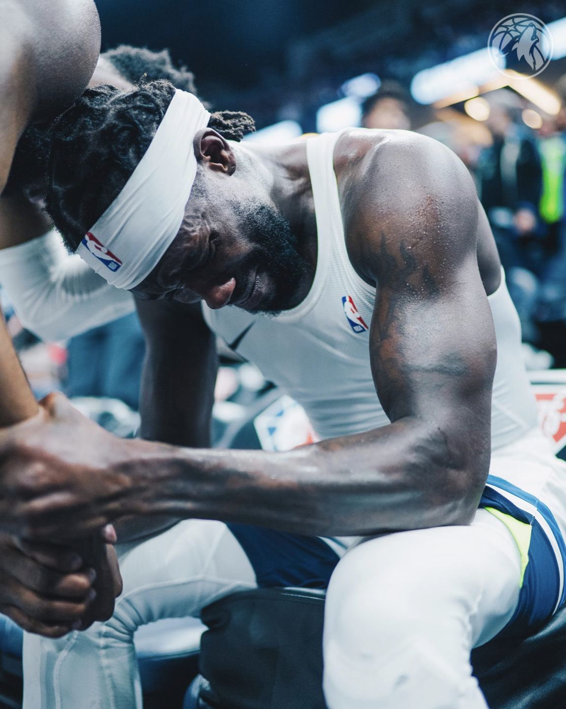
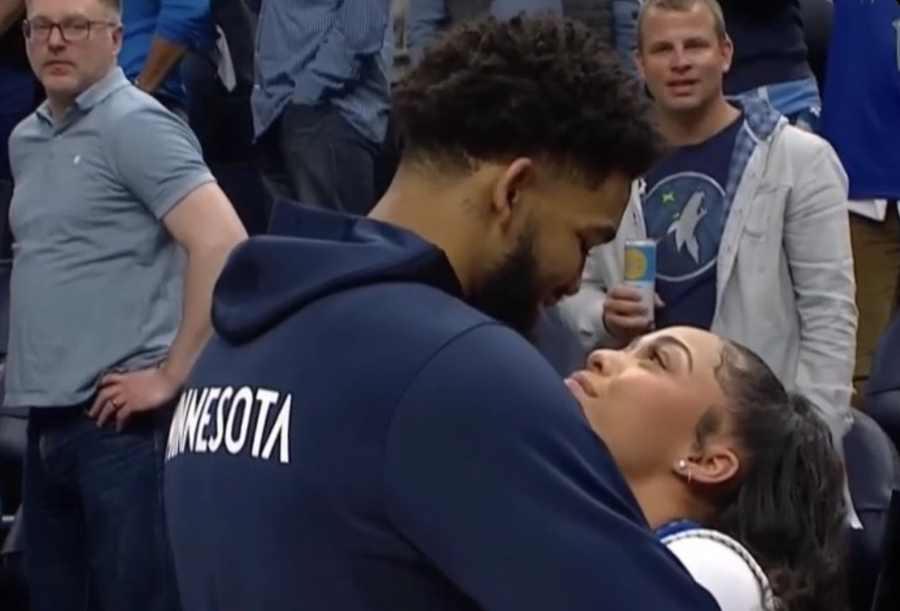
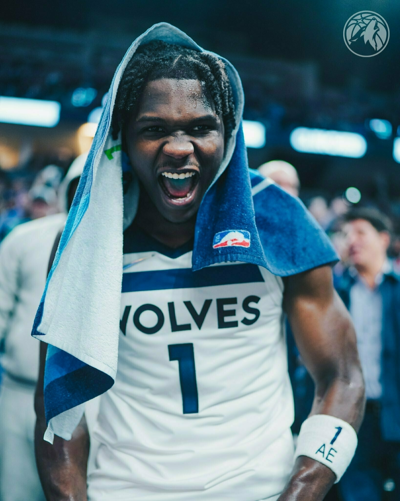

Anti-Joy in Sports Commentating
The Minnesota Timberwolves won a playoff play-in game last night. With that win, the Wolves locked in their seventh-seed playoff position and will play the Memphis Grizzlies in a seven-game series. It looked like the team was going to lose. I almost shut the game off after three quarters because they were losing, their best player was in foul trouble, their heart-and-soul player was in foul trouble, and frankly I needed the sleep.
If I would have shut the game off I would have missed an exciting, gritty comeback. Karl-Anthony Towns did foul out. Patrick Beverley did not (in part from reffing that requires a sixth foul to be much more egregious than the previous five). The team came back and won it at the end. PatBev beat his former team and it was emotional for him. The crowd went nuts. Beverley went nuts, standing on tables and throwing his jersey into the crowd. He was crying by the time he made his way off the floor.

Stepping back, it was, of course, a little over-the-top that everyone was celebrating so hard. It was “just” a playoff play-in game, after all. The better-seeded team (the Timberwolves) should have won, after all. Save that celebration for one of those more rare things, like a Minnesota team winning a playoff series. I can see that viewpoint.
My favorite part was the emotion of PatBev. Clearly that was all built into the tenacious work he did in the fourth quarter, including a steal to seal the game and a self-congratulatory celebration directory in front of the Clippers owner, Steve Ballmer.
My favorite silly part was the contrast of PatBev’s emotions flowing out after the game versus Towns smooching and hugging his special lady. Towns had checked out before seven minutes remained after a stinker of a game and it seemed he may have moved on. (Yes, he was being hammered all game with nary a foul called. Yes, a couple of the fouls called on him were questionable. Still, it was just a bad game with some bad choices.) Anyway, I don’t fault any of them for any of this, but it was a funny contrast.

But then I repeated the mistake I made at halftime: I listened to Shaquille O’Neal and Charles Barkley talk about basketball. This is the first game I’ve watched closely in years. The Shaq/Chuck absurdity is not something that is ingrained in me like it is with true NBA fans. They mocked the Wolves and fans for celebrating. They repeatedly called the coach and team “dumb” and “stupid.” The production crew even put together a One Shining Moment montage to point out how amateur the whole celebration was.
I get mocking the celebration a little bit. From the outside it makes a sort of sense. But for the amount of money going into that production and staff, maybe rather than mocking people let’s think about it for a moment and try to tell the story of what’s going on there. Tell the story of a team with hardly any success since Kevin Garnett left it, and no success before he arrived. Tell the story of an expansion team whose original teenage fans are now in their forties and have yet to see more than one season of playoff success. Tell the story of PatBev and his redemption against a team that he felt slighted him (the announcing crew did a decent job at that). Tell the story of a fan base who has been bludgeoned by countless playoff (I know this wasn’t the playoffs) failures. (Though don’t tell it in too much detail because we are oh-so-tired of hearing it. Maybe just imply it and talk about how great it must feel to have this moment of come-back success.) Tell the story of D’Angelo Russell politely calling out the “quiet fans” mid-season followed by the team and fans hitting their stride together to become one of the hottest teams in the playoffs. Tell the story of a comeback from a team that has wilted in the fourth quarter for the past decade. It just seems like a better story!
What I don’t get is the seething dislike of joy-of-the-game by commentators who, I assume, are being paid quite handsomely. Shaq and Chuck were clearly unprepared to talk about the Timberwolves team. It was like they were watching an NCAA March Madness game with teams they had never seen before; reacting in the moment. Imagine going to your job so unprepared. So the Timberwolves made some stupid plays, and the coaches maybe rolled the dice a little naively. Sure, call that out. Don’t paint an entire team and staff as “dumb” and “stupid” based on one half of a basketball game. “They are so talented, but the stupidest team.” You don’t out-athlete your dumb to lead the league in scoring. You don’t out-athlete dumb to have one of the best shot selection charts in the league. You don’t have the most-improved record via dumb-but-athletic unless your roster changes much more drastically than theirs did. This is team that obviously has a smart coaching staff working with a lot of smart, receptive players. Sure, call out bad choices, but do your research so you can also say, “Knowing this team, they will take this experience to heart and adapt going forward.”
This isn’t the only sport that is plagued with commentators who hate the modern game or who come into their job without doing any prep work. Baseball is notorious for putting former players who hate the modern game into the announcing booth, especially in their national broadcasts. They staff the World Series with John Smoltz, who generally cannot think of one thing modern players or teams do better than he and his colleagues did back in the day.
Now I don’t want leagues and media companies to place patsies into their commentator jobs. Especially with local commentators, I appreciate some “calling out” of how a team is being run. Of course I want some critical analysis as part of a broadcast, but it should be earned critical analysis, in my opinion. It should come from some preparation and understanding of the players and teams you are critiquing. It should come with some acceptance that the games have evolved, which doesn’t mean there can’t be a flavor of “this game is less appealing to me and I hope they can evolve it some more.” What a terrible business move to suck the joy out of the playoff (and playoff-like) broadcasts that draw more casual fans whom you wish to convert to serious fans. As long as it doesn’t improve, I’ll continue to tune out more often or mute when I do tune in.
Oh, and who do you think Shaq and Chuck picked to win the seventh-seeded Timberwolves versus second-seeded Grizzlies game? That’s right, the Timberwolves.

April 13, 2022